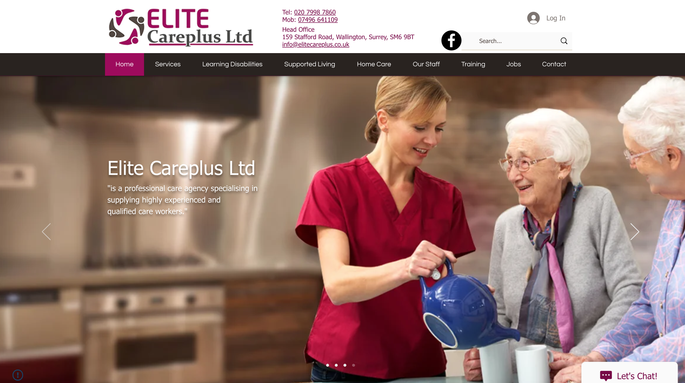
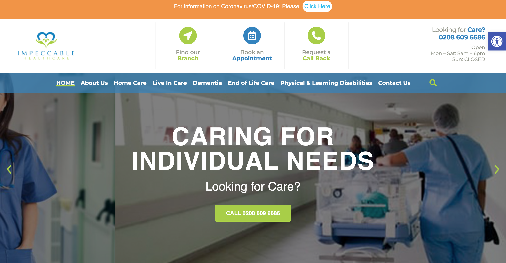
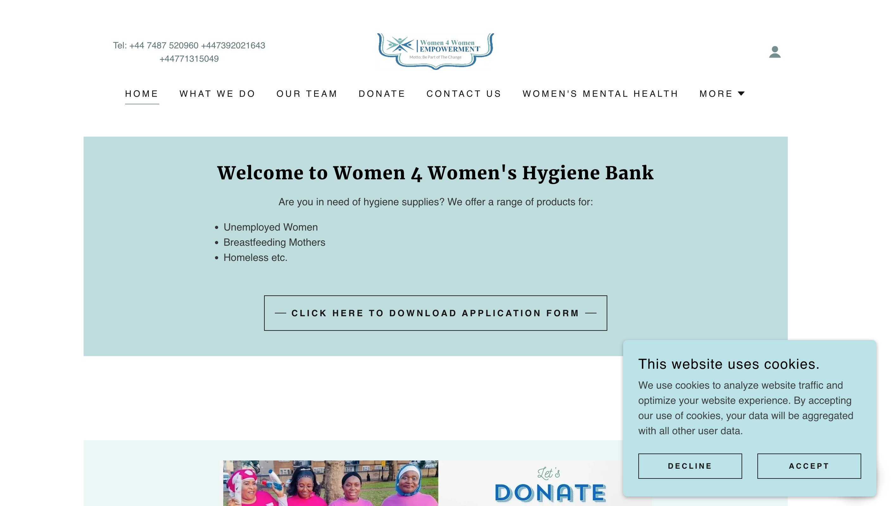

London, United Kingdom
Professional driver.
Technology builder.
London private hire driver since 2016, BSc Computer Science graduate and mobile-app developer pursuing autonomous-vehicle safety, testing, fleet operations and vehicle-data opportunities.

Open to opportunities
AV operations • Fleet testing • Data collection
Professional profile
A practical bridge between the road and the data behind it
I combine extensive real-world private hire experience with software development and technical problem-solving. My work requires calm judgement, passenger care, hazard awareness, route planning, vehicle checks and confident use of digital systems. I am now building on that experience for supervised autonomous-vehicle trials and operations.
Selected capabilities
Relevant to autonomous mobility
Safe urban driving
Professional passenger transport across London, with continuous attention to pedestrians, cyclists, changing road conditions and customer safety.
Testing and reporting
Structured problem-solving, application debugging, event logging, repeatable testing and clear reporting of unexpected behaviour.
Technical learning
Computer Science foundation with current hands-on development in Flutter, Dart, Android, OCR processing and data-led decision logic.
Current technical project
London Driver Intelligence
Personal Flutter/Android project • In development
A mobile application designed to help London private hire drivers interpret trip offers consistently. The prototype processes on-screen information using OCR, validates journey fields and applies configurable decision rules.
- Fare, pickup-time and journey-time extraction
- UK postcode validation and congestion warnings
- Take, consider, decline and manual-review outcomes
- Duplicate suppression, structured logs and automated tests
Independent personal project. Not affiliated with or approved by Uber or Transport for London.
CAPTUREOffer data
VALIDATERequired fields
ASSESSDecision rules
REPORTClear outcome
Previous digital work
Web projects



Next opportunity